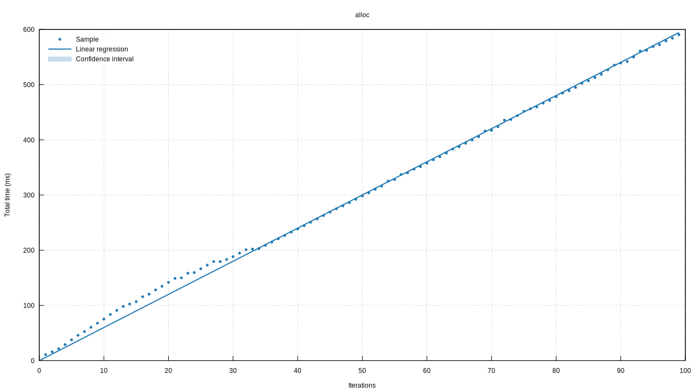
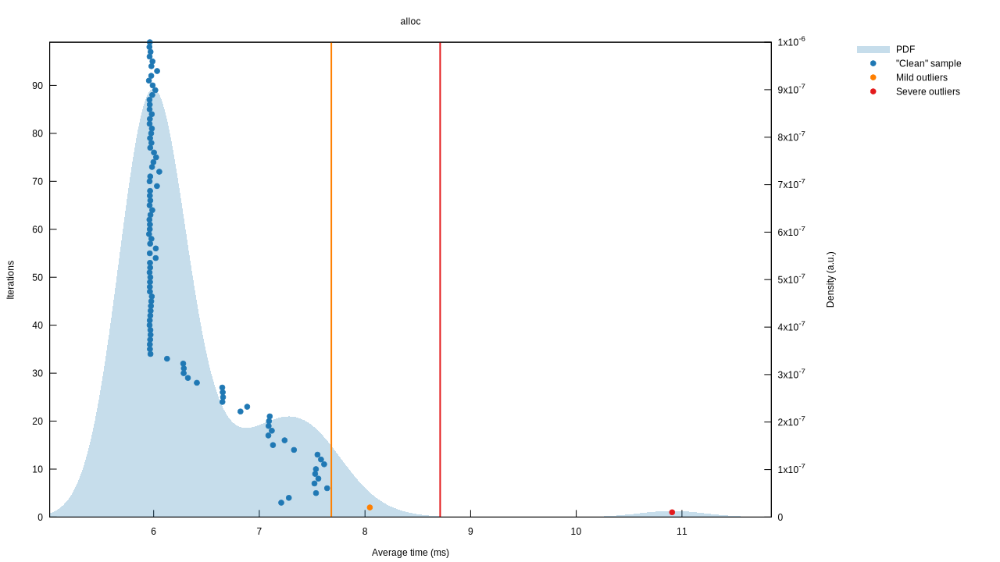
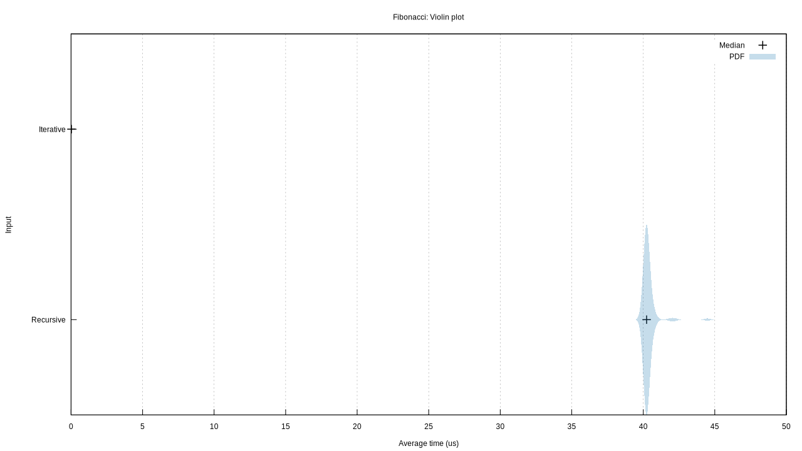
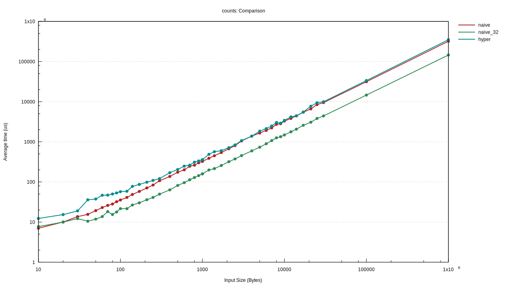

Criterion.rs
Criterion.rs is a statistics-driven micro-benchmarking tool. It is a Rust port of Haskell's Criterion library.
Criterion.rs benchmarks collect and store statistical information from run to run and can automatically detect performance regressions as well as measuring optimizations.
Criterion.rs is free and open source. You can find the source on GitHub. Issues and feature requests can be posted on the issue tracker.
API Docs
In addition to this book, you may also wish to read the API documentation.
License
Criterion.rs is dual-licensed under the Apache 2.0 and the MIT licenses.
Debug Output
To enable debug output in Criterion.rs, define the environment variable CRITERION_DEBUG. For example (in bash):
CRITERION_DEBUG=1 cargo bench
This will enable extra debug output. If using gnuplot, Criterion.rs will also save the gnuplot scripts alongside the generated plot files. When raising issues with Criterion.rs (especially when reporting issues with the plot generation) please run your benchmarks with this option enabled and provide the additional output and relevant gnuplot scripts.
Getting Started
This is a quick walkthrough for adding Criterion.rs benchmarks to an existing crate.
I'll assume that we have a crate, mycrate, whose lib.rs contains the following code:
#![allow(unused)] fn main() { #[inline] fn fibonacci(n: u64) -> u64 { match n { 0 => 1, 1 => 1, n => fibonacci(n-1) + fibonacci(n-2), } } }
Step 1 - Add Dependency to Cargo.toml
To enable Criterion.rs benchmarks, add the following to your Cargo.toml file:
[dev-dependencies]
criterion = "0.3"
[[bench]]
name = "my_benchmark"
harness = false
This adds a development dependency on Criterion.rs, and declares a benchmark called my_benchmark
without the standard benchmarking harness. It's important to disable the standard benchmark
harness, because we'll later add our own and we don't want them to conflict.
Step 2 - Add Benchmark
As an example, we'll benchmark our implementation of the Fibonacci function. Create a benchmark
file at $PROJECT/benches/my_benchmark.rs with the following contents (see the Details section
below for an explanation of this code):
#![allow(unused)] fn main() { use criterion::{black_box, criterion_group, criterion_main, Criterion}; use mycrate::fibonacci; pub fn criterion_benchmark(c: &mut Criterion) { c.bench_function("fib 20", |b| b.iter(|| fibonacci(black_box(20)))); } criterion_group!(benches, criterion_benchmark); criterion_main!(benches); }
Step 3 - Run Benchmark
To run this benchmark, use the following command:
cargo bench
You should see output similar to this:
Running target/release/deps/example-423eedc43b2b3a93
Benchmarking fib 20
Benchmarking fib 20: Warming up for 3.0000 s
Benchmarking fib 20: Collecting 100 samples in estimated 5.0658 s (188100 iterations)
Benchmarking fib 20: Analyzing
fib 20 time: [26.029 us 26.251 us 26.505 us]
Found 11 outliers among 99 measurements (11.11%)
6 (6.06%) high mild
5 (5.05%) high severe
slope [26.029 us 26.505 us] R^2 [0.8745662 0.8728027]
mean [26.106 us 26.561 us] std. dev. [808.98 ns 1.4722 us]
median [25.733 us 25.988 us] med. abs. dev. [234.09 ns 544.07 ns]
Details
Let's go back and walk through that benchmark code in more detail.
#![allow(unused)] fn main() { use criterion::{black_box, criterion_group, criterion_main, Criterion}; use mycrate::fibonacci; }
First, we declare the criterion crate and import the Criterion
type. Criterion is the
main type for the Criterion.rs library. It provides methods to configure and define groups of
benchmarks. We also import black_box, which will be described later.
In addition to this, we declare mycrate as an external crate and import our fibonacci function
from it. Cargo compiles benchmarks (or at least, the ones in /benches) as if each one was a
separate crate from the main crate. This means that we need to import our library crate as an
external crate, and it means that we can only benchmark public functions.
#![allow(unused)] fn main() { fn criterion_benchmark(c: &mut Criterion) { }
Here we create a function to contain our benchmark code. The name of this function doesn't matter, but it should be clear and understandable.
#![allow(unused)] fn main() { c.bench_function("fib 20", |b| b.iter(|| fibonacci(black_box(20)))); } }
This is where the real work happens. The bench_function method defines a benchmark with a name
and a closure. The name should be unique among all of the benchmarks for your project. The closure
must accept one argument, a
Bencher. The bencher
performs the benchmark - in this case, it simply calls our fibonacci function in a loop. There
are a number of other ways to perform benchmarks, including the option to benchmark with arguments,
and to compare the performance of two functions. See the API documentation for details on all of
the different benchmarking options. Using the black_box function stops the compiler from
constant-folding away the whole function and replacing it with a constant.
You may recall that we marked the fibonacci function as #[inline]. This allows it to be inlined
across different crates. Since the benchmarks are technically a separate crate, that means it can
be inlined into the benchmark, improving performance.
#![allow(unused)] fn main() { criterion_group!(benches, criterion_benchmark); criterion_main!(benches); }
Here we invoke the criterion_group!
(link) macro to
generate a benchmark group called benches, containing the criterion_benchmark function defined
earlier. Finally, we invoke the criterion_main!
(link) macro to
generate a main function which executes the benches group. See the API documentation for more
information on these macros.
Step 4 - Optimize
This fibonacci function is quite inefficient. We can do better:
#![allow(unused)] fn main() { fn fibonacci(n: u64) -> u64 { let mut a = 0; let mut b = 1; match n { 0 => b, _ => { for _ in 0..n { let c = a + b; a = b; b = c; } b } } } }
Running the benchmark now produces output like this:
Running target/release/deps/example-423eedc43b2b3a93
Benchmarking fib 20
Benchmarking fib 20: Warming up for 3.0000 s
Benchmarking fib 20: Collecting 100 samples in estimated 5.0000 s (13548862800 iterations)
Benchmarking fib 20: Analyzing
fib 20 time: [353.59 ps 356.19 ps 359.07 ps]
change: [-99.999% -99.999% -99.999%] (p = 0.00 < 0.05)
Performance has improved.
Found 6 outliers among 99 measurements (6.06%)
4 (4.04%) high mild
2 (2.02%) high severe
slope [353.59 ps 359.07 ps] R^2 [0.8734356 0.8722124]
mean [356.57 ps 362.74 ps] std. dev. [10.672 ps 20.419 ps]
median [351.57 ps 355.85 ps] med. abs. dev. [4.6479 ps 10.059 ps]
As you can see, Criterion is statistically confident that our optimization has made an improvement. If we introduce a performance regression, Criterion will instead print a message indicating this.
User Guide
This chapter covers the output produced by Criterion.rs benchmarks, both the command-line reports and the charts. It also details more advanced usages of Criterion.rs such as benchmarking external programs and comparing the performance of multiple functions.
Migrating from libtest
This page shows an example of converting a libtest or bencher benchmark to use Criterion.rs.
The Benchmark
We'll start with this benchmark as an example:
#![allow(unused)] #![feature(test)] fn main() { extern crate test; use test::Bencher; use test::black_box; fn fibonacci(n: u64) -> u64 { match n { 0 => 1, 1 => 1, n => fibonacci(n-1) + fibonacci(n-2), } } #[bench] fn bench_fib(b: &mut Bencher) { b.iter(|| fibonacci(black_box(20))); } }
The Migration
The first thing to do is update the Cargo.toml to disable the libtest
benchmark harness:
[[bench]]
name = "example"
harness = false
We also need to add Criterion.rs to the dev-dependencies section of Cargo.toml:
[dev-dependencies]
criterion = "0.3"
The next step is to update the imports:
#![allow(unused)] fn main() { use criterion::{black_box, criterion_group, criterion_main, Criterion}; }
Then, we can change the bench_fib function. Remove the #[bench] and change
the argument to &mut Criterion instead. The contents of this function need to
change as well:
#![allow(unused)] fn main() { fn bench_fib(c: &mut Criterion) { c.bench_function("fib 20", |b| b.iter(|| fibonacci(black_box(20)))); } }
Finally, we need to invoke some macros to generate a main function, since we no longer have libtest to provide one:
#![allow(unused)] fn main() { criterion_group!(benches, bench_fib); criterion_main!(benches); }
And that's it! The complete migrated benchmark code is below:
#![allow(unused)] fn main() { use criterion::{black_box, criterion_group, criterion_main, Criterion}; fn fibonacci(n: u64) -> u64 { match n { 0 => 1, 1 => 1, n => fibonacci(n-1) + fibonacci(n-2), } } fn bench_fib(c: &mut Criterion) { c.bench_function("fib 20", |b| b.iter(|| fibonacci(black_box(20)))); } criterion_group!(benches, bench_fib); criterion_main!(benches); }
Command-Line Output
The output for this page was produced by running cargo bench -- --verbose. cargo bench omits
some of this information. Note: If cargo bench fails with an error message about an unknown
argument, see the
FAQ.
Every Criterion.rs benchmark calculates statistics from the measured iterations and produces a report like this:
Benchmarking alloc
Benchmarking alloc: Warming up for 1.0000 s
Benchmarking alloc: Collecting 100 samples in estimated 13.354 s (5050 iterations)
Benchmarking alloc: Analyzing
alloc time: [2.5094 ms 2.5306 ms 2.5553 ms]
thrpt: [391.34 MiB/s 395.17 MiB/s 398.51 MiB/s]
change: [-38.292% -37.342% -36.524%] (p = 0.00 < 0.05)
Performance has improved.
Found 8 outliers among 100 measurements (8.00%)
4 (4.00%) high mild
4 (4.00%) high severe
slope [2.5094 ms 2.5553 ms] R^2 [0.8660614 0.8640630]
mean [2.5142 ms 2.5557 ms] std. dev. [62.868 us 149.50 us]
median [2.5023 ms 2.5262 ms] med. abs. dev. [40.034 us 73.259 us]
Warmup
Every Criterion.rs benchmark iterates the benchmarked function automatically for a configurable warmup period (by default, for three seconds). For Rust function benchmarks, this is to warm up the processor caches and (if applicable) file system caches.
Collecting Samples
Criterion iterates the function to be benchmarked with a varying number of iterations to generate an estimate of the time taken by each iteration. The number of samples is configurable. It also prints an estimate of the time the sampling process will take based on the time per iteration during the warmup period.
Time
time: [2.5094 ms 2.5306 ms 2.5553 ms]
thrpt: [391.34 MiB/s 395.17 MiB/s 398.51 MiB/s]
This shows a confidence interval over the measured per-iteration time for this benchmark. The left and right values show the lower and upper bounds of the confidence interval respectively, while the center value shows Criterion.rs' best estimate of the time taken for each iteration of the benchmarked routine.
The confidence level is configurable. A greater confidence level (eg. 99%) will widen the interval and thus provide the user with less information about the true slope. On the other hand, a lesser confidence interval (eg. 90%) will narrow the interval but then the user is less confident that the interval contains the true slope. 95% is generally a good balance.
Criterion.rs performs bootstrap resampling to generate these confidence intervals. The number of bootstrap samples is configurable, and defaults to 100,000.
Optionally, Criterion.rs can also report the throughput of the benchmarked code in units of bytes or elements per second.
Change
When a Criterion.rs benchmark is run, it saves statistical information in the target/criterion directory. Subsequent executions of the benchmark will load this data and compare it with the current sample to show the effects of changes in the code.
change: [-38.292% -37.342% -36.524%] (p = 0.00 < 0.05)
Performance has improved.
This shows a confidence interval over the difference between this run of the benchmark and the last one, as well as the probability that the measured difference could have occurred by chance. These lines will be omitted if no saved data could be read for this benchmark.
The second line shows a quick summary. This line will indicate that the performance has improved or regressed if Criterion.rs has strong statistical evidence that this is the case. It may also indicate that the change was within the noise threshold. Criterion.rs attempts to reduce the effects of noise as much as possible, but differences in benchmark environment (eg. different load from other processes, memory usage, etc.) can influence the results. For highly-deterministic benchmarks, Criterion.rs can be sensitive enough to detect these small fluctuations, so benchmark results that overlap the range +-noise_threshold are assumed to be noise and considered insignificant. The noise threshold is configurable, and defaults to +-2%.
Additional examples:
alloc time: [1.2421 ms 1.2540 ms 1.2667 ms]
change: [+40.772% +43.934% +47.801%] (p = 0.00 < 0.05)
Performance has regressed.
alloc time: [1.2508 ms 1.2630 ms 1.2756 ms]
change: [-1.8316% +0.9121% +3.4704%] (p = 0.52 > 0.05)
No change in performance detected.
benchmark time: [442.92 ps 453.66 ps 464.78 ps]
change: [-0.7479% +3.2888% +7.5451%] (p = 0.04 > 0.05)
Change within noise threshold.
Detecting Outliers
Found 8 outliers among 100 measurements (8.00%)
4 (4.00%) high mild
4 (4.00%) high severe
Criterion.rs attempts to detect unusually high or low samples and reports them as outliers. A large number of outliers suggests that the benchmark results are noisy and should be viewed with appropriate skepticism. In this case, you can see that there are some samples which took much longer than normal. This might be caused by unpredictable load on the computer running the benchmarks, thread or process scheduling, or irregularities in the time taken by the code being benchmarked.
In order to ensure reliable results, benchmarks should be run on a quiet computer and should be designed to do approximately the same amount of work for each iteration. If this is not possible, consider increasing the measurement time to reduce the influence of outliers on the results at the cost of longer benchmarking period. Alternately, the warmup period can be extended (to ensure that any JIT compilers or similar are warmed up) or other iteration loops can be used to perform setup before each benchmark to prevent that from affecting the results.
Additional Statistics
slope [2.5094 ms 2.5553 ms] R^2 [0.8660614 0.8640630]
mean [2.5142 ms 2.5557 ms] std. dev. [62.868 us 149.50 us]
median [2.5023 ms 2.5262 ms] med. abs. dev. [40.034 us 73.259 us]
This shows additional confidence intervals based on other statistics.
Criterion.rs performs a linear regression to calculate the time per iteration. The first line shows the confidence interval of the slopes from the linear regressions, while the R^2 area shows the goodness-of-fit values for the lower and upper bounds of that confidence interval. If the R^2 value is low, this may indicate the benchmark isn't doing the same amount of work on each iteration. You may wish to examine the plot output and consider improving the consistency of your benchmark routine.
The second line shows confidence intervals on the mean and standard deviation of the per-iteration times (calculated naively). If std. dev. is large compared to the time values from above, the benchmarks are noisy. You may need to change your benchmark to reduce the noise.
The median/med. abs. dev. line is similar to the mean/std. dev. line, except that it uses the median and median absolute deviation. As with the std. dev., if the med. abs. dev. is large, this indicates the benchmarks are noisy.
A Note Of Caution
Criterion.rs is designed to produce robust statistics when possible, but it can't account for everything. For example, the performance improvements and regressions listed in the above examples were created just by switching my laptop between battery power and wall power rather than changing the code under test. Care must be taken to ensure that benchmarks are performed under similar conditions in order to produce meaningful results.
Command-Line Options
Note: If cargo bench fails with an error message about an unknown argument, see the FAQ.
Criterion.rs benchmarks accept a number of custom command-line parameters. This
is a list of the most common options. Run cargo bench -- -h to see a full
list.
- To filter benchmarks, use
cargo bench -- <filter>where<filter>is a regular expression matching the benchmark ID. For example, runningcargo bench -- fib_20would only run benchmarks whose ID contains the stringfib_20, whilecargo bench -- fib_\d+would also matchfib_300. - To print more detailed output, use
cargo bench -- --verbose - To disable colored output, use
cargo bench -- --color never - To disable plot generation, use
cargo bench -- --noplot - To iterate each benchmark for a fixed length of time without saving, analyzing or plotting the results, use
cargo bench -- --profile-time <num_seconds>. This is useful when profiling the benchmarks. It reduces the amount of unrelated clutter in the profiling results and prevents Criterion.rs' normal dynamic sampling logic from greatly increasing the runtime of the benchmarks. - To save a baseline, use
cargo bench -- --save-baseline <name>. To compare against an existing baseline, usecargo bench -- --baseline <name>. For more on baselines, see below. - To test that the benchmarks run successfully without performing the measurement or analysis (eg. in a CI setting), use
cargo test --benches. - To override the default plotting backend, use
cargo bench -- --plotting-backend gnuplotorcargo bench --plotting-backend plotters.gnuplotis used by default if it is installed. - To change the CLI output format, use
cargo bench -- --output-format <name>. Supported output formats are: criterion- Use Criterion's normal output formatbencher- An output format similar to the output produced by thebenchercrate or nightlylibtestbenchmarks. Though this provides less information than thecriterionformat, it may be useful to support external tools that can parse this output.
Baselines
By default, Criterion.rs will compare the measurements against the previous run (if any). Sometimes it's useful to keep a set of measurements around for several runs. For example, you might want to make multiple changes to the code while comparing against the master branch. For this situation, Criterion.rs supports custom baselines.
--save-baseline <name>will compare against the named baseline, then overwrite it.--baseline <name>will compare against the named baseline without overwriting it.--load-baseline <name>will load the named baseline as the new data set rather than the previous baseline.
Using these options, you can manage multiple baseline measurements. For instance, if you want to compare against a static reference point such as the master branch, you might run:
git checkout master
cargo bench -- --save-baseline master
git checkout feature
cargo bench -- --save-baseline feature
git checkout optimizations
# Some optimization work here
# Measure again
cargo bench
# Now compare against the stored baselines without overwriting it or re-running the measurements
cargo bench -- --load-baseline new --baseline master
cargo bench -- --load-baseline new --baseline feature
HTML Report
Criterion.rs can generate an HTML report displaying the results of the benchmark under
target/criterion/report/index.html. By default, the plots are generated using
gnuplot if it is available, or the
plotters crate if it is not. The example below was generated
using the gnuplot backend, but the charts generated by plotters are similar.
To see an example report, click here. For more details on the charts and statistics displayed, check the other pages of this book.
Plots & Graphs
Criterion.rs can generate a number of useful charts and graphs which you can check to get a better
understanding of the behavior of the benchmark. These charts will be generated with
gnuplot by default, but will fall back on using the plotters crate if
it is not available. The examples below were generated using the gnuplot backend, but the plotters
ones are similar.
File Structure
The plots and saved data are stored under target/criterion/$BENCHMARK_NAME/. Here's an example of
the folder structure:
$BENCHMARK_NAME/
├── base/
│ ├── raw.csv
│ ├── estimates.json
│ ├── sample.json
│ └── tukey.json
├── change/
│ └── estimates.json
├── new/
│ ├── raw.csv
│ ├── estimates.json
│ ├── sample.json
│ └── tukey.json
└── report/
├── both/
│ ├── pdf.svg
│ ├── regression.svg
│ └── iteration_times.svg
├── change/
│ ├── mean.svg
│ ├── median.svg
│ └── t-test.svg
├── index.html
├── MAD.svg
├── mean.svg
├── median.svg
├── pdf.svg
├── pdf_small.svg
├── regression.svg (optional)
├── regression_small.svg (optional)
├── iteration_times.svg (optional)
├── iteration_times_small.svg (optional)
├── relative_pdf_small.svg
├── relative_regression_small.svg (optional)
├── relative_iteration_times_small.svg (optional)
├── SD.svg
└── slope.svg
The new folder contains the statistics for the last benchmarking run, while the base folder
contains those for the last run on the base baseline (see Command-Line
Options for more information on baselines). The plots are in
the report folder. Criterion.rs only keeps historical data for the last run. The report/both
folder contains plots which show both runs on one plot, while the report/change folder contains
plots showing the differences between the last two runs. This example shows the plots produced by
the default bench_function benchmark method. Other methods may produce additional charts, which
will be detailed in their respective pages.
MAD/Mean/Median/SD/Slope

These are the simplest of the plots generated by Criterion.rs. They display the bootstrapped distributions and confidence intervals for the given statistics.
Regression

The regression plot shows each data point plotted on an X-Y plane showing the number of iterations vs the time taken. It also shows the line representing Criterion.rs' best guess at the time per iteration. A good benchmark will show the data points all closely following the line. If the data points are scattered widely, this indicates that there is a lot of noise in the data and that the benchmark may not be reliable. If the data points follow a consistent trend but don't match the line (eg. if they follow a curved pattern or show several discrete line segments) this indicates that the benchmark is doing different amounts of work depending on the number of iterations, which prevents Criterion.rs from generating accurate statistics and means that the benchmark may need to be reworked.
The combined regression plot in the report/both folder shows only the regression lines and is a
useful visual indicator of the difference in performance between the two runs.
The regression chart can only be displayed when Criterion.rs uses the linear sampling mode. In the flat sampling mode, the iteration times chart is displayed instead.
Iteration Times

The iteration times chart displays a collection of the average iteration times. It is less useful than the regression chart, but since the regression chart cannot be displayed in the flat sampling mode, this is shown instead.

The PDF chart shows the probability distribution function for the samples. It also shows the ranges used to classify samples as outliers. In this example (as in the regression example above) we can see that the performance trend changes noticeably below ~35 iterations, which we may wish to investigate.
Benchmarking With Inputs
Criterion.rs can run benchmarks with one or more different input values to investigate how the performance behavior changes with different inputs.
Benchmarking With One Input
If you only have one input to your function, you can use a simple interface on the Criterion struct
to run that benchmark.
#![allow(unused)] fn main() { use criterion::BenchmarkId; use criterion::Criterion; use criterion::{criterion_group, criterion_main}; fn do_something(size: usize) { // Do something with the size } fn from_elem(c: &mut Criterion) { let size: usize = 1024; c.bench_with_input(BenchmarkId::new("input_example", size), &size, |b, &s| { b.iter(|| do_something(s)); }); } criterion_group!(benches, from_elem); criterion_main!(benches); }
This is convenient in that it automatically passes the input through a black_box so that you don't
need to call that directly. It also includes the size in the benchmark description.
Benchmarking With A Range Of Values
Criterion.rs can compare the performance of a function over a range of inputs using a
BenchmarkGroup.
#![allow(unused)] fn main() { use std::iter; use criterion::BenchmarkId; use criterion::Criterion; use criterion::Throughput; fn from_elem(c: &mut Criterion) { static KB: usize = 1024; let mut group = c.benchmark_group("from_elem"); for size in [KB, 2 * KB, 4 * KB, 8 * KB, 16 * KB].iter() { group.throughput(Throughput::Bytes(*size as u64)); group.bench_with_input(BenchmarkId::from_parameter(size), size, |b, &size| { b.iter(|| iter::repeat(0u8).take(size).collect::<Vec<_>>()); }); } group.finish(); } criterion_group!(benches, from_elem); criterion_main!(benches); }
In this example, we're benchmarking the time it takes to collect an iterator producing a sequence of N bytes into a Vec. First, we create a benchmark group, which is a way of telling Criterion.rs that a set of benchmarks are all related. Criterion.rs will generate extra summary pages for benchmark groups. Then we simply iterate over a set of desired inputs; we could just as easily unroll this loop manually, generate inputs of a particular size, etc.
Inside the loop, we call the throughput function which informs Criterion.rs that the benchmark
operates on size bytes per iteration. Criterion.rs will use this to estimate the number of bytes
per second that our function can process. Next we call bench_with_input, providing a unique
benchmark ID (in this case it's just the size, but you could generate custom strings as needed),
passing in the size and a lambda that takes the size and a Bencher and performs the actual
measurement.
Finally, we finish the benchmark group; this generates the summary pages for that group. It is
recommended to call finish explicitly, but if you forget it will be called automatically when the
group is dropped.
Here we can see that there is a approximately-linear relationship between the length of an iterator and the time taken to collect it into a Vec.
Advanced Configuration
Criterion.rs provides a number of configuration options for more-complex use cases. These options are documented here.
Configuring Sample Count & Other Statistical Settings
Criterion.rs allows the user to adjust certain statistical parameters. The most common way to set
these is using the BenchmarkGroup structure - see the documentation for that structure for a list
of which settings are available.
#![allow(unused)] fn main() { use criterion::*; fn my_function() { ... } fn bench(c: &mut Criterion) { let mut group = c.benchmark_group("sample-size-example"); // Configure Criterion.rs to detect smaller differences and increase sample size to improve // precision and counteract the resulting noise. group.significance_level(0.1).sample_size(500); group.bench_function("my-function", |b| b.iter(|| my_function()); group.finish(); } criterion_group!(benches, bench); criterion_main!(benches); }
It is also possible to change Criterion.rs' default values for these settings, by using the full
form of the criterion_group macro:
#![allow(unused)] fn main() { use criterion::*; fn my_function() { ... } fn bench(c: &mut Criterion) { let mut group = c.benchmark_group("sample-size-example"); group.bench_function("my-function", |b| b.iter(|| my_function()); group.finish(); } criterion_group!{ name = benches; // This can be any expression that returns a `Criterion` object. config = Criterion::default().significance_level(0.1).sample_size(500); targets = bench } criterion_main!(benches); }
Throughput Measurements
When benchmarking some types of code it is useful to measure the throughput as well as the iteration time, either in bytes per second or elements per second. Criterion.rs can estimate the throughput of a benchmark, but it needs to know how many bytes or elements each iteration will process.
Throughput measurements are only supported when using the BenchmarkGroup structure; it is not available when using the simpler bench_function interface.
To measure throughput, use the throughput method on BenchmarkGroup, like so:
#![allow(unused)] fn main() { use criterion::*; fn decode(bytes: &[u8]) { // Decode the bytes ... } fn bench(c: &mut Criterion) { let bytes : &[u8] = ...; let mut group = c.benchmark_group("throughput-example"); group.throughput(Throughput::Bytes(bytes.len() as u64)); group.bench_function("decode", |b| b.iter(|| decode(bytes)); group.finish(); } criterion_group!(benches, bench); criterion_main!(benches); }
For parameterized benchmarks, you can simply call the throughput function inside a loop:
#![allow(unused)] fn main() { use criterion::*; type Element = ...; fn encode(elements: &[Element]) { // Encode the elements ... } fn bench(c: &mut Criterion) { let elements_1 : &[u8] = ...; let elements_2 : &[u8] = ...; let mut group = c.benchmark_group("throughput-example"); for (i, elements) in [elements_1, elements_2].iter().enumerate() { group.throughput(Throughput::Elements(elems.len() as u64)); group.bench_with_input(format!("Encode {}", i), elements, |elems, b| { b.iter(||encode(elems)) }); } group.finish(); } criterion_group!(benches, bench); criterion_main!(benches); }
Setting the throughput causes a throughput estimate to appear in the output:
alloc time: [5.9846 ms 6.0192 ms 6.0623 ms]
thrpt: [164.95 MiB/s 166.14 MiB/s 167.10 MiB/s]
Chart Axis Scaling
By default, Criterion.rs generates plots using a linear-scale axis. When using parameterized benchmarks, it is common for the input sizes to scale exponentially in order to cover a wide range of possible inputs. In this situation, it may be easier to read the resulting plots with a logarithmic axis.
As with throughput measurements above, this option is only available when using the BenchmarkGroup structure.
#![allow(unused)] fn main() { use criterion::*; fn do_a_thing(x: u64) { // Do something ... } fn bench(c: &mut Criterion) { let plot_config = PlotConfiguration::default() .summary_scale(AxisScale::Logarithmic); let mut group = c.benchmark_group("log_scale_example"); group.plot_config(plot_config); for i in [1u64, 10u64, 100u64, 1000u64, 10000u64, 100000u64, 1000000u64].iter() { group.bench_function(BenchmarkId::from_parameter(i), i, |b, i| b.iter(|| do_a_thing(i))); } group.finish(); } criterion_group!(benches, bench); criterion_main!(benches); }
Currently the axis scaling is the only option that can be set on the PlotConfiguration struct. More may be added in the future.
Sampling Mode
By default, Criterion.rs can scale well to handle benchmarks that execute in picoseconds up to benchmarks that execute in milliseconds. Benchmarks that take longer will work just fine, but they tend to take a long time to run. The only way to deal with this was to reduce the sample count.
In Criterion.rs 0.3.3, a new option was added to change the sampling mode to handle long-running
benchmarks. The benchmark author can call BenchmarkGroup::sampling_mode(SamplingMode) to change
the sampling mode.
Currently three options are available:
SamplingMode::Auto, which chooses a sampling mode from the other options automatically. This is the default.SamplingMode::Linear, the original sampling mode intended for faster benchmarks.SamplingMode::Flat, intended for long-running benchmarks.
The Flat sampling mode does change some of the statistical analysis and the charts that are generated. It is not recommended to use Flat sampling except where necessary.
#![allow(unused)] fn main() { use criterion::*; use std::time::Duration; fn my_function() { ::std::thread::sleep(Duration::from_millis(10)) } fn bench(c: &mut Criterion) { let mut group = c.benchmark_group("flat-sampling-example"); group.sampling_mode(SamplingMode::Flat); group.bench_function("my-function", |b| b.iter(|| my_function()); group.finish(); } criterion_group!(benches, bench); criterion_main!(benches); }
Comparing Functions
Criterion.rs can automatically benchmark multiple implementations of a function and produce summary graphs to show the differences in performance between them. First, lets create a comparison benchmark. We can even combine this with benchmarking over a range of inputs.
#![allow(unused)] fn main() { use criterion::{criterion_group, criterion_main, Criterion, BenchmarkId}; fn fibonacci_slow(n: u64) -> u64 { match n { 0 => 1, 1 => 1, n => fibonacci_slow(n-1) + fibonacci_slow(n-2), } } fn fibonacci_fast(n: u64) -> u64 { let mut a = 0; let mut b = 1; match n { 0 => b, _ => { for _ in 0..n { let c = a + b; a = b; b = c; } b } } } fn bench_fibs(c: &mut Criterion) { let mut group = c.benchmark_group("Fibonacci"); for i in [20u64, 21u64].iter() { group.bench_with_input(BenchmarkId::new("Recursive", i), i, |b, i| b.iter(|| fibonacci_slow(*i))); group.bench_with_input(BenchmarkId::new("Iterative", i), i, |b, i| b.iter(|| fibonacci_fast(*i))); } group.finish(); } criterion_group!(benches, bench_fibs); criterion_main!(benches); }
These are the same two fibonacci functions from the Getting Started page.
#![allow(unused)] fn main() { fn bench_fibs(c: &mut Criterion) { let mut group = c.benchmark_group("Fibonacci"); for i in [20u64, 21u64].iter() { group.bench_with_input(BenchmarkId::new("Recursive", i), i, |b, i| b.iter(|| fibonacci_slow(*i))); group.bench_with_input(BenchmarkId::new("Iterative", i), i, |b, i| b.iter(|| fibonacci_fast(*i))); } group.finish(); } }
As in the earlier example of benchmarking over a range of inputs, we create a benchmark group and
iterate over our inputs. To compare multiple functions, we simply call bench_with_input multiple
times inside the loop. Criterion will generate a report for each individual benchmark/input pair,
as well as summary reports for each benchmark (across all inputs) and each input (across all
benchmarks), as well as an overall summary of the whole benchmark group.
Naturally, the benchmark group could just as easily be used to benchmark non-parameterized functions as well.
Violin Plot

The Violin Plot shows the median times and the PDF of each implementation.
Line Chart

The line chart shows a comparison of the different functions as the input or input size increases,
which can be generated with Criterion::benchmark_group.
CSV Output
NOTE: The CSV output is in the process of being deprecated. For machine-readable output,
cargo-criterion's --message-format=json option is recommended instead - see External
Tools. CSV output will become an optional feature in
Criterion.rs 0.4.0.
Criterion.rs saves its measurements in several files, as shown below:
$BENCHMARK/
├── base/
│ ├── raw.csv
│ ├── estimates.json
│ ├── sample.json
│ └── tukey.json
├── change/
│ └── estimates.json
├── new/
│ ├── raw.csv
│ ├── estimates.json
│ ├── sample.json
│ └── tukey.json
The JSON files are all considered private implementation details of Criterion.rs, and their structure may change at any time without warning.
However, there is a need for some sort of stable and machine-readable output to enable projects like
lolbench to keep historical data or perform additional analysis
on the measurements. For this reason, Criterion.rs also writes the raw.csv file. The format of
this file is expected to remain stable between different versions of Criterion.rs, so this file is
suitable for external tools to depend on.
The format of raw.csv is as follows:
group,function,value,throughput_num,throughput_type,sample_measured_value,unit,iteration_count
Fibonacci,Iterative,,,,915000,ns,110740
Fibonacci,Iterative,,,,1964000,ns,221480
Fibonacci,Iterative,,,,2812000,ns,332220
Fibonacci,Iterative,,,,3767000,ns,442960
Fibonacci,Iterative,,,,4785000,ns,553700
Fibonacci,Iterative,,,,6302000,ns,664440
Fibonacci,Iterative,,,,6946000,ns,775180
Fibonacci,Iterative,,,,7815000,ns,885920
Fibonacci,Iterative,,,,9186000,ns,996660
Fibonacci,Iterative,,,,9578000,ns,1107400
Fibonacci,Iterative,,,,11206000,ns,1218140
...
This data was taken with this benchmark code:
#![allow(unused)] fn main() { fn compare_fibonaccis(c: &mut Criterion) { let mut group = c.benchmark_group("Fibonacci"); group.bench_with_input("Recursive", 20, |b, i| b.iter(|| fibonacci_slow(*i))); group.bench_with_input("Iterative", 20, |b, i| b.iter(|| fibonacci_fast(*i))); group.finish(); } }
raw.csv contains the following columns:
group- This corresponds to the function group name, in this case "Fibonacci" as seen in the code above. This is the parameter given to theCriterion::benchfunctions.function- This corresponds to the function name, in this case "Iterative". When comparing multiple functions, each function is given a different name. Otherwise, this will be the empty string.value- This is the parameter passed to the benchmarked function when using parameterized benchmarks. In this case, there is no parameter so the value is the empty string.throughput_num- This is the numeric value of the Throughput configured on the benchmark (if any)throughput_type- "bytes" or "elements", corresponding to the variant of the Throughput configured on the benchmark (if any)iteration_count- The number of times the benchmark was iterated for this sample.sample_measured_value- The value of the measurement for this sample. Note that this is the measured value for the whole sample, not the time-per-iteration (see Analysis Process for more detail). To calculate the time-per-iteration, usesample_measured_value/iteration_count.unit- a string representing the unit for the measured value. For the defaultWallTimemeasurement this will be "ns", for nanoseconds.
As you can see, this is the raw measurements taken by the Criterion.rs benchmark process. There is one record for each sample, and one file for each benchmark.
The results of Criterion.rs' analysis of these measurements are not currently available in machine-readable form. If you need access to this information, please raise an issue describing your use case.
Known Limitations
There are currently a number of limitations to the use of Criterion.rs relative to the standard benchmark harness.
First, it is necessary for Criterion.rs to provide its own main function using the criterion_main macro.
This results in several limitations:
- It is not possible to include benchmarks in code in the
src/directory as one might with the regular benchmark harness. - It is not possible to benchmark non-
pubfunctions. External benchmarks, including those using Criterion.rs, are compiled as a separate crate, and non-pubfunctions are not visible to the benchmarks. - It is not possible to benchmark functions in binary crates. Binary crates cannot be dependencies of other crates, and that includes external tests and benchmarks (see here for more details)
- Is is not possible to benchmark functions in crates that do not provide an
rlib.
Criterion.rs cannot currently solve these issues. An experimental RFC is being implemented to enable custom test and benchmarking frameworks.
Second, Criterion.rs provides a stable-compatible replacement for the black_box function provided by the standard test crate. This replacement is not as reliable as the official one, and it may allow dead-code-elimination to affect the benchmarks in some circumstances. If you're using a Nightly build of Rust, you can add the real_blackbox feature to your dependency on Criterion.rs to use the standard black_box function instead.
Example:
criterion = { version = '...', features=['real_blackbox'] }
Bencher Compatibility Layer
Criterion.rs provides a small crate which can be used as a drop-in replacement for most common
usages of bencher in order to make it easy for existing bencher users to try out Criterion.rs.
This page shows an example of how to use this crate.
Example
We'll start with the example benchmark from bencher:
#![allow(unused)] fn main() { use bencher::{benchmark_group, benchmark_main, Bencher}; fn a(bench: &mut Bencher) { bench.iter(|| { (0..1000).fold(0, |x, y| x + y) }) } fn b(bench: &mut Bencher) { const N: usize = 1024; bench.iter(|| { vec![0u8; N] }); bench.bytes = N as u64; } benchmark_group!(benches, a, b); benchmark_main!(benches); }
The first step is to edit the Cargo.toml file to replace the bencher dependency with
criterion_bencher_compat:
Change:
[dev-dependencies]
bencher = "0.1"
To:
[dev-dependencies]
criterion_bencher_compat = "0.3"
Then we update the benchmark file itself to change:
#![allow(unused)] fn main() { use bencher::{benchmark_group, benchmark_main, Bencher}; }
To:
#![allow(unused)] fn main() { use criterion_bencher_compat as bencher; use bencher::{benchmark_group, benchmark_main, Bencher}; }
That's all! Now just run cargo bench:
Running target/release/deps/bencher_example-d865087781455bd5
a time: [234.58 ps 237.68 ps 241.94 ps]
Found 9 outliers among 100 measurements (9.00%)
4 (4.00%) high mild
5 (5.00%) high severe
b time: [23.972 ns 24.218 ns 24.474 ns]
Found 4 outliers among 100 measurements (4.00%)
4 (4.00%) high mild
Limitations
criterion_bencher_compat does not implement the full API of the bencher crate, only the most
commonly-used subset. If your benchmarks require parts of the bencher crate which are not
supported, you may need to temporarily disable them while trying Criterion.rs.
criterion_bencher_compat does not provide access to most of Criterion.rs' more advanced features.
If the Criterion.rs benchmarks work well for you, it is recommended to convert your benchmarks to
use the Criterion.rs interface directly. See Migrating from libtest
for more information on that.
Timing Loops
The Bencher structure
provides a number of functions which implement different timing loops for measuring the performance
of a function. This page discusses how these timing loops work and which one is appropriate for
different situations.
iter
The simplest timing loop is iter. This loop should be the default for most benchmarks. iter
calls the benchmark N times in a tight loop and records the elapsed time for the entire loop.
Because it takes only two measurements (the time before and after the loop) and does nothing else in
the loop iter has effectively zero measurement overhead - meaning it can accurately measure the
performance of functions as small as a single processor instruction.
However, iter has limitations as well. If the benchmark returns a value which implements Drop, it
will be dropped inside the loop and the drop function's time will be included in the measurement.
Additionally, some benchmarks need per-iteration setup. A benchmark for a sorting algorithm
might require some unsorted data to operate on, but we don't want the generation of the unsorted
data to affect the measurement. iter provides no way to do this.
iter_with_large_drop
iter_with_large_drop is an answer to the first problem. In this case, the values returned by the
benchmark are collected into a Vec to be dropped after the measurement is complete. This
introduces a small amount of measurement overhead, meaning that the measured value will be slightly
higher than the true runtime of the function. This overhead is almost always negligible, but it's
important to be aware that it exists. Extremely fast benchmarks (such as those in the
hundreds-of-picoseconds range or smaller) or benchmarks that return very large structures may incur
more overhead.
Aside from the measurement overhead, iter_with_large_drop has its own limitations. Collecting the
returned values into a Vec uses heap memory, and the amount of memory used is not under the
control of the user. Rather, it depends on the iteration count which in turn depends on the
benchmark settings and the runtime of the benchmarked function. It is possible that a benchmark
could run out of memory while collecting the values to drop.
iter_batched/iter_batched_ref
iter_batched and iter_batched_ref are the next step up in complexity for timing loops. These
timing loops take two closures rather than one. The first closure takes no arguments and returns
a value of type T - this is used to generate setup data. For example, the setup function might
clone a vector of unsorted data for use in benchmarking a sorting function. The second closure
is the function to benchmark, and it takes a T (for iter_batched) or &mut T (for
iter_batched_ref).
These two timing loops generate a batch of inputs and measure the time to execute the benchmark on
all values in the batch. As with iter_with_large_drop they also collect the values returned from
the benchmark into a Vec and drop it later without timing the drop. Then another batch of inputs
is generated and the process is repeated until enough iterations of the benchmark have been measured.
Keep in mind that this is only necessary if the benchmark modifies the input - if the input is
constant then one input value can be reused and the benchmark should use iter instead.
Both timing loops accept a third parameter which controls how large a batch is. If the batch size
is too large, we might run out of memory generating the inputs and collecting the outputs. If it's
too small, we could introduce more measurement overhead than is necessary. For ease of use, Criterion
provides three pre-defined choices of batch size, defined by the
BatchSize enum -
SmallInput, LargeInput and PerIteration. It is also possible (though not recommended) to set
the batch size manually.
SmallInput should be the default for most benchmarks. It is tuned for benchmarks where the setup
values are small (small enough that millions of values can safely be held in memory) and the output
is likewise small or nonexistent. SmallInput incurs the least measurement overhead (equivalent to
that of iter_with_large_drop and therefore negligible for nearly all benchmarks), but also uses
the most memory.
LargeInput should be used if the input or output of the benchmark is large enough that SmallInput
uses too much memory. LargeInput incurs slightly more measurement overhead than SmallInput, but
the overhead is still small enough to be negligible for almost all benchmarks.
PerIteration forces the batch size to one. That is, it generates a single setup input, times the
execution of the function once, discards the setup and output, then repeats. This results in a
great deal of measurement overhead - several orders of magnitude more than the other options. It
can be enough to affect benchmarks into the hundreds-of-nanoseconds range. Using PerIteration
should be avoided wherever possible. However, it is sometimes necessary if the input or output of
the benchmark is extremely large or holds a limited resource like a file handle.
Although sticking to the pre-defined settings is strongly recommended, Criterion.rs does allow
users to choose their own batch size if necessary. This can be done with BatchSize::NumBatches or
BatchSize::NumIterations, which specify the number of batches per sample or the number of
iterations per batch respectively. These options should be used only when necessary, as they require
the user to tune the settings manually to get accurate results. However, they are provided as an
option in case the pre-defined options are all unsuitable. NumBatches should be preferred over
NumIterations as it will typically have less measurement overhead, but NumIterations provides
more control over the batch size which may be necessary in some situations.
iter_custom
This is a special "timing loop" that relies on you to do your own timing. Where the other timing
loops take a lambda to call N times in a loop, this takes a lambda of the form
FnMut(iters: u64) -> M::Value - meaning that it accepts the number of iterations and returns
the measured value. Typically, this will be a Duration for the default WallTime measurement,
but it may be other types for other measurements (see the
Custom Measurements page for more details). The lambda
can do whatever is needed to measure the value.
Use iter_custom when you need to do something that doesn't fit into the usual approach of calling
a function in a loop. For example, this might be used for:
- Benchmarking external processes by sending the iteration count and receiving the elapsed time
- Measuring how long a thread pool takes to execute N jobs, to see how lock contention or pool-size affects the wall-clock time
Try to keep the overhead in the measurement routine to a minimum; Criterion.rs will still use its normal warm-up/target-time logic, which is based on wall-clock time. If your measurement routine takes a long time to perform each measurement it could mess up the calculations and cause Criterion.rs to run too few iterations (not to mention that the benchmarks would take a long time). Because of this, it's best to do heavy setup like starting processes or threads before running the benchmark.
What do I do if my function's runtime is smaller than the measurement overhead?
Criterion.rs' timing loops are carefully designed to minimize the measurement overhead as much as possible. For most benchmarks the measurement overhead can safely be ignored because the true runtime of most benchmarks will be very large relative to the overhead. However, benchmarks with a runtime that is not much larger than the overhead can be difficult to measure.
If you believe that your benchmark is small compared to the measurement overhead, the first option
is to adjust the timing loop to reduce the overhead. Using iter or iter_batched with SmallInput
should be the first choice, as these options incur a minimum of measurement overhead. In general,
using iter_batched with larger batches produces less overhead, so replacing PerIteration with
NumIterations with a suitable batch size will typically reduce the overhead. It is possible for
the batch size to be too large, however, which will increase (rather than decrease) overhead.
If this is not sufficient, the only recourse is to benchmark a larger function. It's tempting to do
this by manually executing the routine a fixed number of times inside the benchmark, but this is
equivalent to what NumIterations already does. The only difference is that Criterion.rs can
account for NumIterations and show the correct runtime for one iteration of the function rather
than many. Instead, consider benchmarking at a higher level.
It's important to stress that measurement overhead only matters for very fast functions which
modify their input. For slower functions (roughly speaking, anything at the nanosecond level or
larger, or the microsecond level for PerIteration, assuming a reasonably modern x86_64 processor
and OS or equivalent) are not meaningfully affected by measurement overhead. For functions which
only read their input and do not modify or consume it, one value can be shared by all iterations
using the iter loop which has effectively no overhead.
Deprecated Timing Loops
In older Criterion.rs benchmarks (pre 2.10), one might see two more timing loops, called
iter_with_setup and iter_with_large_setup. iter_with_setup is equivalent to iter_batched
with PerIteration. iter_with_large_setup is equivalent to iter_batched with NumBatches(1).
Both produce much more measurement overhead than SmallInput. Additionally. large_setup also
uses much more memory. Both should be updated to use iter_batched, preferably with SmallInput.
They are kept for backwards-compatibility reasons, but no longer appear in the API documentation.
Custom Measurements
By default, Criterion.rs measures the wall-clock time taken by the benchmarks. However, there are many other ways to measure the performance of a function, such as hardware performance counters or POSIX's CPU time. Since version 0.3.0, Criterion.rs has had support for plugging in alternate timing measurements. This page details how to define and use these custom measurements.
Note that as of version 0.3.0, only timing measurements are supported, and only a single measurement can be used for one benchmark. These restrictions may be lifted in future versions.
Defining Custom Measurements
For developers who wish to use custom measurements provided by an existing crate, skip to "Using Custom Measurements" below.
Custom measurements are defined by a pair of traits, both defined in criterion::measurement.
Measurement
First, we'll look at the main trait, Measurement.
#![allow(unused)] fn main() { pub trait Measurement { type Intermediate; type Value: MeasuredValue; fn start(&self) -> Self::Intermediate; fn end(&self, i: Self::Intermediate) -> Self::Value; fn add(&self, v1: &Self::Value, v2: &Self::Value) -> Self::Value; fn zero(&self) -> Self::Value; fn to_f64(&self, val: &Self::Value) -> f64; fn formatter(&self) -> &dyn ValueFormatter; } }
The most important methods here are start and end and their associated types, Intermediate
and Value. start is called to start a measurement and end is called to complete it. As an
example, the start method of the wall-clock time measurement returns the value of the system
clock at the moment that start is called. This starting time is then passed to the end function,
which reads the system clock again and calculates the elapsed time between the two calls. This
pattern - reading some system counter before and after the benchmark and reporting the difference -
is a common way for code to measure performance.
The next two functions, add and zero are pretty simple; Criterion.rs sometimes needs to be able
to break up a sample into batches that are added together (eg. in Bencher::iter_batched) and so
we need to have a way to calculate the sum of the measurements for each batch to get the overall
value for the sample.
to_f64 is used to convert the measured value to an f64 value so that Criterion can perform its
analysis. As of 0.3.0, only a single value can be returned for analysis per benchmark. Since f64
doesn't carry any unit information, the implementor should be careful to choose their units to avoid
having extremely large or extremely small values that may have floating-point precision issues. For
wall-clock time, we convert to nanoseconds.
Finally, we have formatter, which just returns a trait-object reference to a ValueFormatter
(more on this later).
For our half-second measurement, this is all pretty straightforward; we're still measuring
wall-clock time so we can just use Instant and Duration like WallTime does:
#![allow(unused)] fn main() { /// Silly "measurement" that is really just wall-clock time reported in half-seconds. struct HalfSeconds; impl Measurement for HalfSeconds { type Intermediate = Instant; type Value = Duration; fn start(&self) -> Self::Intermediate { Instant::now() } fn end(&self, i: Self::Intermediate) -> Self::Value { i.elapsed() } fn add(&self, v1: &Self::Value, v2: &Self::Value) -> Self::Value { *v1 + *v2 } fn zero(&self) -> Self::Value { Duration::from_secs(0) } fn to_f64(&self, val: &Self::Value) -> f64 { let nanos = val.as_secs() * NANOS_PER_SEC + u64::from(val.subsec_nanos()); nanos as f64 } fn formatter(&self) -> &dyn ValueFormatter { &HalfSecFormatter } } }
ValueFormatter
The next trait is ValueFormatter, which defines how a measurement is displayed to the user.
#![allow(unused)] fn main() { pub trait ValueFormatter { fn format_value(&self, value: f64) -> String {...} fn format_throughput(&self, throughput: &Throughput, value: f64) -> String {...} fn scale_values(&self, typical_value: f64, values: &mut [f64]) -> &'static str; fn scale_throughputs(&self, typical_value: f64, throughput: &Throughput, values: &mut [f64]) -> &'static str; fn scale_for_machines(&self, values: &mut [f64]) -> &'static str; } }
All of these functions accept a value to format in f64 form; the values passed in will be in the
same scale as the values returned from to_f64, but may not be the exact same values. That is, if
to_f64 returns values scaled to "thousands of cycles", the values passed to format_value and
the other functions will be in the same units, but may be different numbers (eg. the mean of all
sample times).
Implementors should try to format the values in a way that will make sense to humans. "1,500,000 ns" is needlessly confusing while "1.5 ms" is much clearer. If you can, try to use SI prefixes to simplify the numbers. An easy way to do this is to have a series of conditionals like so:
#![allow(unused)] fn main() { if ns < 1.0 { // ns = time in nanoseconds per iteration format!("{:>6} ps", ns * 1e3) } else if ns < 10f64.powi(3) { format!("{:>6} ns", ns) } else if ns < 10f64.powi(6) { format!("{:>6} us", ns / 1e3) } else if ns < 10f64.powi(9) { format!("{:>6} ms", ns / 1e6) } else { format!("{:>6} s", ns / 1e9) } }
It's also a good idea to limit the amount of precision in floating-point output - after a few
digits the numbers don't matter much anymore but add a lot of visual noise and make the results
harder to interpret. For example, it's very unlikely that anyone cares about the difference between
10.2896653s and 10.2896654s - it's much more salient that their function takes "about 10.290
seconds per iteration".
With that out of the way, format_value is pretty straightforward. format_throughput is also not
too difficult; match on Throughput::Bytes or Throughput::Elements and generate an appropriate
description. For wall-clock time, that would likely take the form of "bytes per second", but a
measurement that read CPU performance counters might want to display throughput in terms of "cycles
per byte". Note that default implementations of format_value and format_throughput are provided
which use scale_values and scale_throughputs, but you can override them if you wish.
scale_values is a bit more complex. This accepts a "typical" value chosen by Criterion.rs, and a
mutable slice of values to scale. This function should choose an appropriate unit based on the
typical value, and convert all values in the slice to that unit. It should also return a string
representing the chosen unit. So, for our wall-clock times where the measured values are in
nanoseconds, if we wanted to display plots in milliseconds we would multiply all of the input
values by 10.0f64.powi(-6) and return "ms", because multiplying a value in nanoseconds by 10^-6
gives a value in milliseconds. scale_throughputs does the same thing, only it converts a slice of
measured values to their corresponding scaled throughput values.
scale_for_machines is similar to scale_values, except that it's used for generating
machine-readable outputs. It does not accept a typical value, because this function should always
return values in the same unit.
Our half-second measurement formatter thus looks like this:
#![allow(unused)] fn main() { struct HalfSecFormatter; impl ValueFormatter for HalfSecFormatter { fn format_value(&self, value: f64) -> String { // The value will be in nanoseconds so we have to convert to half-seconds. format!("{} s/2", value * 2f64 * 10f64.powi(-9)) } fn format_throughput(&self, throughput: &Throughput, value: f64) -> String { match *throughput { Throughput::Bytes(bytes) => format!( "{} b/s/2", f64::from(bytes) / (value * 2f64 * 10f64.powi(-9)) ), Throughput::Elements(elems) => format!( "{} elem/s/2", f64::from(elems) / (value * 2f64 * 10f64.powi(-9)) ), } } fn scale_values(&self, ns: f64, values: &mut [f64]) -> &'static str { for val in values { *val *= 2f64 * 10f64.powi(-9); } "s/2" } fn scale_throughputs( &self, _typical: f64, throughput: &Throughput, values: &mut [f64], ) -> &'static str { match *throughput { Throughput::Bytes(bytes) => { // Convert nanoseconds/iteration to bytes/half-second. for val in values { *val = (bytes as f64) / (*val * 2f64 * 10f64.powi(-9)) } "b/s/2" } Throughput::Elements(elems) => { for val in values { *val = (elems as f64) / (*val * 2f64 * 10f64.powi(-9)) } "elem/s/2" } } } fn scale_for_machines(&self, values: &mut [f64]) -> &'static str { // Convert values in nanoseconds to half-seconds. for val in values { *val *= 2f64 * 10f64.powi(-9); } "s/2" } } }
Using Custom Measurements
Once you (or an external crate) have defined a custom measurement, using it is relatively easy.
You will need to override the Criterion struct (which defaults to WallTime) by providing your
own measurement using the with_measurement function and overriding the default Criterion object
configuration. Your benchmark functions will also have to declare the measurement type they work
with.
#![allow(unused)] fn main() { fn fibonacci_cycles(criterion: &mut Criterion<HalfSeconds>) { // Use the criterion struct as normal here. } fn alternate_measurement() -> Criterion<HalfSeconds> { Criterion::default().with_measurement(HalfSeconds) } criterion_group! { name = benches; config = alternate_measurement(); targets = fibonacci_cycles } }
Profiling
When optimizing code, it's often helpful to profile it to help understand why it produces the measured performance characteristics. Criterion.rs has several features to assist with profiling benchmarks.
Note on running benchmark executables directly
Because of how Cargo passes certain command-line flags (see the FAQ for more details) when running
benchmarks, Criterion.rs benchmark executables expect a --bench argument on their command line.
Cargo adds this automatically, but when running the executables directly (eg. in a profiler) you
will need to add the --bench argument.
--profile-time
Criterion.rs benchmark executables accept a --profile-time <num_seconds>
argument. If this argument is provided to a run, the benchmark executable will
attempt to iterate the benchmark executable for approximately the given number
of seconds, but will not perform its usual analysis or save any results.
This way, Criterion.rs' analysis code won't appear in the profiling
measurements.
For users of external profilers such as Linux perf, simply run the benchmark
executable(s) under your favorite profiler, passing the profile-time argument.
For users of in-process profilers such as Google's cpuprofiler, read on.
Implementing In-Process Profiling Hooks
For developers who wish to use profiling hooks provided by an existing crate, skip to "Enabling In-Process Profiling" below.
Since version 0.3.0, Criterion.rs has supported adding hooks to start and stop
an in-process profiler such as cpuprofiler.
This hook takes the form of a trait, criterion::profiler::Profiler.
#![allow(unused)] fn main() { pub trait Profiler { fn start_profiling(&mut self, benchmark_id: &str, benchmark_dir: &Path); fn stop_profiling(&mut self, benchmark_id: &str, benchmark_dir: &Path); } }
These functions will be called before and after each benchmark when running in
--profile-time mode, and will not be called otherwise. This makes it easy to
integrate in-process profiling into benchmarks when wanted, without having the
profiling instrumentation affect regular benchmark measurements.
Enabling In-Process Profiling
Once you (or an external crate) have defined a profiler hook, using it is relatively easy.
You will need to override the Criterion struct (which defaults to ExternalProfiler) by providing your
own measurement using the with_profiler function and overriding the default Criterion object
configuration.
#![allow(unused)] fn main() { extern crate my_custom_profiler; use my_custom_profiler::MyCustomProfiler; fn fibonacci_profiled(criterion: &mut Criterion) { // Use the criterion struct as normal here. } fn profiled() -> Criterion { Criterion::default().with_profiler(MyCustomProfiler) } criterion_group! { name = benches; config = profiled(); targets = fibonacci_profiled } }
The profiler hook will only take effect when running in --profile-time mode.
Custom Test Framework
Nightly versions of the rust compiler support custom test frameworks. Criterion.rs provides an
experimental implementation of a custom test framework, meaning that you can use #[criterion]
attributes to mark your benchmarks instead of the normal criterion_group!/criterion_main! macros.
Right now this requires some unstable features, but at some point in the future
criterion_group!/criterion_main! will be deprecated and #[criterion] will become the standard
way to define a Criterion.rs benchmark. If you'd like to try this feature out early, see the
documentation below.
Using #[criterion]
Since custom test frameworks are still unstable, you will need to be using a recent nightly compiler. Once that's installed, add the dependencies to your Cargo.toml:
[dev-dependencies]
criterion = "0.3"
criterion-macro = "0.3"
Note that for #[criterion] benchmarks, we don't need to disable the normal testing harness
as we do with regular Criterion.rs benchmarks.
Let's take a look at an example benchmark (note that this example assumes you're using Rust 2018):
#![allow(unused)] #![feature(custom_test_frameworks)] #![test_runner(criterion::runner)] fn main() { use criterion::{Criterion, black_box}; use criterion_macro::criterion; fn fibonacci(n: u64) -> u64 { match n { 0 | 1 => 1, n => fibonacci(n - 1) + fibonacci(n - 2), } } fn custom_criterion() -> Criterion { Criterion::default() .sample_size(50) } #[criterion] fn bench_simple(c: &mut Criterion) { c.bench_function("Fibonacci-Simple", |b| b.iter(|| fibonacci(black_box(10)))); } #[criterion(custom_criterion())] fn bench_custom(c: &mut Criterion) { c.bench_function("Fibonacci-Custom", |b| b.iter(|| fibonacci(black_box(20)))); } }
The first thing to note is that we enable the custom_test_framework feature and declare that we
want to use criterion::runner as the test runner. We also import criterion_macro::criterion,
which is the #[criterion] macro itself. In future versions this will likely be re-exported from
the criterion crate so that it can be imported from there, but for now we have to import it from
criterion_macro.
After that we define our old friend the Fibonacci function and the benchmarks. To create a
benchmark with #[criterion] you simply attach the attribute to a function that accepts an &mut Criterion. To provide a custom Criterion object (to override default settings or similar) you can
instead use #[criterion(<some_expression_that_returns_a_criterion_object>)] - here we're calling
the custom_criterion function. And that's all there is to it!
Keep in mind that in addition to being built on unstable compiler features, the API design for Criterion.rs and its test framework is still experimental. The macro subcrate will respect SemVer, but future breaking changes are quite likely.
Benchmarking async functions
As of version 0.3.4, Criterion.rs has optional support for benchmarking async functions. Benchmarking async functions works just like benchmarking regular functions, except that the caller must provide a futures executor to run the benchmark in.
Example:
#![allow(unused)] fn main() { use criterion::BenchmarkId; use criterion::Criterion; use criterion::{criterion_group, criterion_main}; // This is a struct that tells Criterion.rs to use the "futures" crate's current-thread executor use criterion::async_executor::FuturesExecutor; // Here we have an async function to benchmark async fn do_something(size: usize) { // Do something async with the size } fn from_elem(c: &mut Criterion) { let size: usize = 1024; c.bench_with_input(BenchmarkId::new("input_example", size), &size, |b, &s| { // Insert a call to `to_async` to convert the bencher to async mode. // The timing loops are the same as with the normal bencher. b.to_async(FuturesExecutor).iter(|| do_something(s)); }); } criterion_group!(benches, from_elem); criterion_main!(benches); }
As can be seen in the code above, to benchmark async functions we must provide an async runtime to the bencher to run the benchmark in. The runtime structs are listed in the table below.
Enabling Async Benchmarking
To enable async benchmark support, Criterion.rs must be compiled with one or more of the following
features, depending on which futures executor(s) you want to benchmark on. It is recommended to use
the same executor that you would use in production. If your executor is not listed here, you can
implement the criterion::async_executor::AsyncExecutor trait for it to add support, or send a pull
request.
| Crate | Feature | Executor Struct |
|---|---|---|
| Tokio | "async_tokio" | tokio::runtime::Runtime, &tokio::runtime::Runtime |
| async-std | "async_std" (note underscore) | AsyncStdExecutor |
| Smol | "async_smol" | SmolExecutor |
| futures | "async_futures" | FuturesExecutor |
| Other | "async" |
Considerations when benchmarking async functions
Async functions naturally result in more measurement overhead than synchronous functions. It is recommended to prefer synchronous functions when benchmarking where possible, especially for small functions.
cargo-criterion
cargo-criterion is an experimental Cargo extension which can act as a replacement for cargo bench. The long-term goal for cargo-criterion is to handle all of the statistical analysis and report generation in a single tool. Then, the code for that can be removed from Criterion.rs (or made optional), reducing benchmark compilation and linking time. Since it manages the whole lifecycle of a benchmark run, cargo-criterion is also in a good position to provide features that would be difficult to implement in Criterion.rs itself.
Currently, cargo-criterion provides most of the same features as running Criterion.rs benchmarks in cargo bench, but with some differences:
cargo-criteriondoes not currently support baselinescargo-criterionis more configurable than Criterion.rscargo-criterionsupports machine-readable output using--message-format=json
cargo-criterion is still under active development, but if you would like to try it out, you can install it with the following command:
cargo install --version=1.0.0-alpha3 cargo-criterion
Once installed, you can run your benchmarks with:
cargo criterion
If you encounter any issues or have any suggestions for future features, please raise an issue at the GitHub repository.
Configuring cargo-criterion
cargo-criterion can be configured by placing a criterion.toml file in your crate, alongside your
Cargo.toml.
The available settings are documented below:
# This is used to override the directory where cargo-criterion saves
# its data and generates reports.
criterion_home = "./target/criterion"
# This is used to configure the format of cargo-criterion's command-line output.
# Options are:
# criterion: Prints confidence intervals for measurement and throughput, and
# indicates whether a change was detected from the previous run. The default.
# quiet: Like criterion, but does not indicate changes. Useful for simply
# presenting output numbers, eg. on a library's README.
# verbose: Like criterion, but prints additional statistics.
# bencher: Emulates the output format of the bencher crate and nightly-only
# libtest benchmarks.
output_format = "criterion"
# This is used to configure the plotting backend used by cargo-criterion.
# Options are "gnuplot" and "plotters", or "auto", which will use gnuplot if it's
# available or plotters if it isn't.
ploting_backend = "auto"
# The colors table allows users to configure the colors used by the charts
# cargo-criterion generates.
[colors]
# These are used in many charts to compare the current measurement against
# the previous one.
current_sample = {r = 31, g = 120, b = 180}
previous_sample = {r = 7, g = 26, b = 28}
# These are used by the full PDF chart to highlight which samples were outliers.
not_an_outlier = {r = 31, g = 120, b = 180}
mild_outlier = {r = 5, g = 127, b = 0}
severe_outlier = {r = 7, g = 26, b = 28}
# These are used for the line chart to compare multiple different functions.
comparison_colors = [
{r = 8, g = 34, b = 34},
{r = 6, g = 139, b = 87},
{r = 0, g = 139, b = 139},
{r = 5, g = 215, b = 0},
{r = 0, g = 0, b = 139},
{r = 0, g = 20, b = 60},
{r = 9, g = 0, b = 139},
{r = 0, g = 255, b = 127},
]
External Tools
cargo-criterion provides a machine-readable output stream which other tools can consume to collect information about the Criterion.rs benchmarks.
To enable this output stream, pass the --message-format argument when running cargo-criterion.
JSON messages
When passing --message-format=json cargo-criterion will output information about:
- Benchmarks, including the basic statistics about the measurements
- Benchmark groups
The output goes to stdout, with one JSON object per line. The reason field distinguishes different
kinds of messages.
Additional messages or fields may be added to the output in the future.
Benchmark Complete Messages
The "benchmark-complete" message includes the measurements and basic statistics from a single Criterion.rs benchmark. The message format is as follows:
{
/* The "reason" indicates which kind of message this is. */
"reason": "benchmark-complete",
/* The id is the identifier of this benchmark */
"id": "norm",
/* Path to the directory containing the report for this benchmark */
"report_directory": "target/criterion/reports/norm",
/* List of integer iteration counts */
"iteration_count": [
30,
/* ... */
3000
],
/* List of floating point measurements (eg. time, CPU cycles) taken
from the benchmark */
"measured_values": [
124200.0,
/* ... */
9937100.0
],
/* The unit associated with measured_values. */
"unit": "ns",
/* The throughput value associated with this benchmark. This can be used
to calculate throughput rates, eg. in bytes or elements per second. */
"throughput": [
{
"per_iteration": 1024,
"unit": "elements"
}
],
/* Confidence intervals for the basic statistics that cargo-criterion
computes. */
/*
"typical" is either the slope (if available) or the mean (if not). It
makes a good general-purpose estimate of the typical performance of a
function.
*/
"typical": {
"estimate": 3419.4923993891925,
"lower_bound": 3375.24221103098,
"upper_bound": 3465.458469579234,
"unit": "ns"
},
"mean": {
"estimate": 3419.5340743105917,
"lower_bound": 3374.4765622217083,
"upper_bound": 3474.096214164006,
"unit": "ns"
},
"median": {
"estimate": 3362.8249818445897,
"lower_bound": 3334.259259259259,
"upper_bound": 3387.5146198830407,
"unit": "ns"
},
"median_abs_dev": {
"estimate": 130.7846461816652,
"lower_bound": 96.55619525548211,
"upper_bound": 161.1643711235156,
"unit": "ns"
},
/* Note that not all benchmarks can measure the slope, so it may be
missing. */
"slope": {
"estimate": 3419.4923993891925,
"lower_bound": 3375.24221103098,
"upper_bound": 3465.458469579234,
"unit": "ns"
},
/* "change" contains some additional statistics about the difference
between this run and the last */
"change": {
/* Percentage differences in the mean & median values */
"mean": {
"estimate": 0.014278477848724602,
"lower_bound": -0.01790259435189548,
"upper_bound": 0.03912764721581533,
"unit": "%"
},
"median": {
"estimate": 0.012211662837601445,
"lower_bound": -0.0005448009516478807,
"upper_bound": 0.024243170768727857,
"unit": "%"
},
/*
Indicates whether cargo-criterion found a statistically-significant
change. Values are NoChange, Improved, or Regressed
*/
"change": "NoChange"
}
}
Group Complete Messages
When a benchmark group is completed, cargo-criterion emits a "group-complete" message containing some information about the group.
{
"reason": "group-complete",
/* The name of the benchmark group */
"group_name": "throughput",
/* List of the benchmark IDs in this group */
"benchmarks": [
"throughput/Bytes",
"throughput/Bytes",
"throughput/Elem"
],
/* Path to the directory that contains the report for this group */
"report_directory": "target/criterion/reports/throughput"
}
Iai
Iai is an experimental benchmarking harness that uses Cachegrind to perform extremely precise single-shot measurements of Rust code. It is intended as a complement to Criterion.rs; among other things, it's useful for reliable benchmarking in CI.
API Docs
In addition to this book, you may also wish to read the API documentation.
Getting Started
Iai is designed to be similar in interface to Criterion.rs, so using it is easy. To get started, add the following to your Cargo.toml file:
[dev-dependencies]
iai = "0.1"
[[bench]]
name = "my_benchmark"
harness = false
Next, define a benchmark by creating a file at $PROJECT/benches/my_benchmark.rs with the following contents:
#![allow(unused)] fn main() { use iai::{black_box, main}; fn fibonacci(n: u64) -> u64 { match n { 0 => 1, 1 => 1, n => fibonacci(n-1) + fibonacci(n-2), } } fn iai_benchmark_short() -> u64 { fibonacci(black_box(10)) } fn iai_benchmark_long() -> u64 { fibonacci(black_box(30)); } iai::main!(iai_benchmark_short, iai_benchmark_long); }
Finally, run this benchmark with cargo bench. You should see output similar to the following:
Running target/release/deps/test_regular_bench-8b173c29ce041afa
bench_fibonacci_short
Instructions: 1735
L1 Accesses: 2364
L2 Accesses: 1
RAM Accesses: 1
Estimated Cycles: 2404
bench_fibonacci_long
Instructions: 26214735
L1 Accesses: 35638623
L2 Accesses: 2
RAM Accesses: 1
Estimated Cycles: 35638668
Comparison with Criterion-rs
I intend Iai to be a complement to Criterion-rs, not a competitor. The two projects measure different things in different ways and have different pros, cons, and limitations, so for most projects the best approach is to use both.
Here's an overview of the important differences:
- Temporary Con: Right now, Iai is lacking many features of Criterion-rs, including reports and configuration of any kind.
- The current intent is to add support to Cargo-criterion for configuring and reporting on Iai benchmarks.
- Pro: Iai can reliably detect much smaller changes in performance than Criterion-rs can.
- Pro: Iai can work reliably in noisy CI environments or even cloud CI providers like GitHub Actions or Travis-CI, where Criterion-rs cannot.
- Pro: Iai also generates profile output from the benchmark without further effort.
- Pro: Although Cachegrind adds considerable runtime overhead, running each benchmark exactly once is still usually faster than Criterion-rs' statistical measurements.
- Mixed: Because Iai can detect such small changes, it may report performance differences from changes to the order of functions in memory and other compiler details.
- Con: Iai's measurements merely correlate with wall-clock time (which is usually what you actually care about), where Criterion-rs measures it directly.
- Con: Iai cannot exclude setup code from the measurements, where Criterion-rs can.
- Con: Because Cachegrind does not measure system calls, IO time is not accurately measured.
- Con: Because Iai runs the benchmark exactly once, it cannot measure variation in the performance such as might be caused by OS thread scheduling or hash-table randomization.
- Limitation: Iai can only be used on platforms supported by Valgrind. Notably, this does not include Windows.
For benchmarks that run in CI (especially if you're checking for performance regressions in pull requests on cloud CI) you should use Iai. For benchmarking on Windows or other platforms that Valgrind doesn't support, you should use Criterion-rs. For other cases, I would advise using both. Iai gives more precision and scales better to larger benchmarks, while Criterion-rs allows for excluding setup time and gives you more information about the actual time your code takes and how strongly that is affected by non-determinism like threading or hash-table randomization. If you absolutely need to pick one or the other though, Iai is probably the one to go with.
Analysis Process
This page details the data collection and analysis process used by Criterion.rs. This is a bit more advanced than the user guide; it is assumed the reader is somewhat familiar with statistical concepts. In particular, the reader should know what bootstrap sampling means.
So, without further ado, let's start with a general overview. Each benchmark in Criterion.rs goes through four phases:
- Warmup - The routine is executed repeatedly to fill the CPU and OS caches and (if applicable) give the JIT time to compile the code
- Measurement - The routine is executed repeatedly and the execution times are recorded
- Analysis - The recorded samples are analyzed and distilled into meaningful statistics, which are then reported to the user
- Comparison - The performance of the current run is compared to the stored data from the last run to determine whether it has changed, and if so by how much
Warmup
The first step in the process is warmup. In this phase, the routine is executed repeatedly to give the OS, CPU and JIT time to adapt to the new workload. This helps prevent things like cold caches and JIT compilation time from throwing off the measurements later. The warmup period is controlled by the warm_up_time value in the Criterion struct.
The warmup period is quite simple. The routine is executed once, then twice, four times and so on until the total accumulated execution time is greater than the configured warm up time. The number of iterations that were completed during this period is recorded, along with the elapsed time.
Measurement
The measurement phase is when Criterion.rs collects the performance data that will be analyzed and used in later stages. This phase is mainly controlled by the measurement_time value in the Criterion struct.
The measurements are done in a number of samples (see the sample_size parameter). Each sample consists of one or more (typically many) iterations of the routine. The elapsed time between the beginning and the end of the iterations, divided by the number of iterations, gives an estimate of the time taken by each iteration.
As measurement progresses, the sample iteration counts are increased. Suppose that the first sample contains 10 iterations. The second sample will contain 20, the third will contain 30 and so on. More formally, the iteration counts are calculated like so:
iterations = [d, 2d, 3d, ... Nd]
Where N is the total number of samples and d is a factor, calculated from the rough estimate of iteration time measured during the warmup period, which is used to scale the number of iterations to meet the configured measurement time. Note that d cannot be less than 1, and therefore the actual measurment time may exceed the configured measurement time if the iteration time is large or the configured measurement time is small.
Note that Criterion.rs does not measure each individual iteration, only the complete sample. The resulting samples are stored for use in later stages. The sample data is also written to the local disk so that it can be used in the comparison phase of future benchmark runs.
Analysis
During this phase Criterion.rs calculates useful statistics from the samples collected during the measurement phase.
Outlier Classification
The first step in analysis is outlier classification. Each sample is classified using a modified version of Tukey's Method, which will be summarized here. First, the interquartile range (IQR) is calculated from the difference between the 25th and 75th percentile. In Tukey's Method, values less than (25th percentile - 1.5 * IQR) or greater than (75th percentile + 1.5 * IQR) are considered outliers. Criterion.rs creates additional fences at (25pct - 3 * IQR) and (75pct + 3 * IQR); values outside that range are considered severe outliers.
Outlier classification is important because the analysis method used to estimate the average iteration time is sensitive to outliers. Thus, when Criterion.rs detects outliers, a warning is printed to inform the user that the benchmark may be less reliable. Additionally, a plot is generated showing which data points are considered outliers, where the fences are, etc.
Note, however, that outlier samples are not dropped from the data, and are used in the following analysis steps along with all other samples.
Linear Regression
The samples collected from a good benchmark should form a rough line when plotted on a chart showing the number of iterations and the time for each sample. The slope of that line gives an estimate of the time per iteration. A single estimate is difficult to interpret, however, since it contains no context. A confidence interval is generally more helpful. In order to generate a confidence interval, a large number of bootstrap samples are generated from the measured samples. A line is fitted to each of the bootstrap samples, and the result is a statistical distribution of slopes that gives a reliable confidence interval around the single estimate calculated from the measured samples.
This resampling process is repeated to generate the mean, standard deviation, median and median absolute deviation of the measured iteration times as well. All of this information is printed to the user and charts are generated. Finally, if there are saved statistics from a previous run, the two benchmark runs are compared.
Comparison
In the comparison phase, the statistics calculated from the current benchmark run are compared against those saved by the previous run to determine if the performance has changed in the meantime, and if so, by how much.
Once again, Criterion.rs generates many bootstrap samples, based on the measured samples from the two runs. The new and old bootstrap samples are compared and their T score is calculated using a T-test. The fraction of the bootstrapped T scores which are more extreme than the T score calculated by comparing the two measured samples gives the probability that the observed difference between the two sets of samples is merely by chance. Thus, if that probability is very low or zero, Criterion.rs can be confident that there is truly a difference in execution time between the two samples. In that case, the mean and median differences are bootstrapped and printed for the user, and the entire process begins again with the next benchmark.
This process can be extremely sensitive to changes, especially when combined with a small, highly deterministic benchmark routine. In these circumstances even very small changes (eg. differences in the load from background processes) can change the measurements enough that the comparison process detects an optimization or regression. Since these sorts of unpredictable fluctuations are rarely of interest while benchmarking, there is also a configurable noise threshold. Optimizations or regressions within (for example) +-1% are considered noise and ignored. It is best to benchmark on a quiet computer where possible to minimize this noise, but it is not always possible to eliminate it entirely.
Frequently Asked Questions
How Should I Run Criterion.rs Benchmarks In A CI Pipeline?
You probably shouldn't (or, if you do, don't rely on the results). The virtualization used by Cloud-CI providers like Travis-CI and Github Actions introduces a great deal of noise into the benchmarking process, and Criterion.rs' statistical analysis can only do so much to mitigate that. This can result in the appearance of large changes in the measured performance even if the actual performance of the code is not changing. A better alternative is to use Iai instead. Iai runs benchmarks inside Cachegrind to directly count the instructions and memory accesses. Iai's measurements won't be thrown off by the virtual machine slowing down or pausing for a time, so it should be more reliable in virtualized environments.
Whichever benchmarking tool you use, though, the process is basically the same. You'll need to:
- Check out the main branch of your code
- Build it and run the benchmarks once, to establish a baseline
- Then switch to the pull request branch
- Built it again and run the benchmarks a second time to compare against the baseline.
cargo bench Gives "Unrecognized Option" Errors for Valid Command-line Options
By default, Cargo implicitly adds a libtest benchmark harness to your crate when benchmarking, to
handle any #[bench] functions, even if you have none. It compiles and runs this executable first,
before any of the other benchmarks. Normally, this is fine - it detects that there are no libtest
benchmarks to execute and exits, allowing Cargo to move on to the real benchmarks. Unfortunately,
it checks the command-line arguments first, and panics when it finds one it doesn't understand.
This causes Cargo to stop benchmarking early, and it never executes the Criterion.rs benchmarks.
This will occur when running cargo bench with any argument that Criterion.rs supports but libtest
does not. For example, --verbose and --save-baseline will cause this issue, while --help will
not. There are two ways to work around this at present:
You could run only your Criterion benchmark, like so:
cargo bench --bench my_benchmark -- --verbose
Note that my_benchmark here corresponds to the name of your benchmark in your
Cargo.toml file.
Another option is to disable benchmarks for your lib or app crate. For example,
for library crates, you could add this to your Cargo.toml file:
[lib]
bench = false
If your crate produces one or more binaries as well as a library, you may need to add additional
records to Cargo.toml like this:
[[bin]]
name = "my-binary"
path = "src/bin/my-binary.rs"
bench = false
This is because Cargo automatically discovers some kinds of binaries and it will enable the default benchmark harness for these as well.
Of course, this only works if you define all of your benchmarks in the
benches directory.
See Rust Issue #47241 for more details.
How Should I Benchmark Small Functions?
Exactly the same way as you would benchmark any other function.
It is sometimes suggested that benchmarks of small (nanosecond-scale) functions should iterate the function to be benchmarked many times internally to reduce the impact of measurement overhead. This is not required with Criterion.rs, and it is not recommended.
To see this, consider the following benchmark:
#![allow(unused)] fn main() { fn compare_small(c: &mut Criterion) { use criterion::black_box; let mut group = c.benchmark_group("small"); group.bench_with_input("unlooped", 10, |b, i| b.iter(|| i + 10)); group.bench_with_input("looped", 10, |b, i| b.iter(|| { for _ in 0..10000 { black_box(i + 10); } })); group.finish(); } }
This benchmark simply adds two numbers - just about the smallest function that could be performed. On my computer, this produces the following output:
small/unlooped time: [270.00 ps 270.78 ps 271.56 ps]
Found 2 outliers among 100 measurements (2.00%)
2 (2.00%) high severe
small/looped time: [2.7051 us 2.7142 us 2.7238 us]
Found 5 outliers among 100 measurements (5.00%)
3 (3.00%) high mild
2 (2.00%) high severe
2.714 microseconds/10000 gives 271.4 picoseconds, or pretty much the same result. Interestingly, this is slightly more than one cycle of my 4th-gen Core i7's maximum clock frequency of 4.4 GHz, which shows how good the pipelining is on modern CPUs. Regardless, Criterion.rs is able to accurately measure functions all the way down to single instructions. See the Analysis Process page for more details on how Criterion.rs performs its measurements, or see the Timing Loops page for details on choosing a timing loop to minimize measurement overhead.
When Should I Use criterion::black_box?
black_box is a function which prevents certain compiler optimizations. Benchmarks are often
slightly artificial in nature and the compiler can take advantage of that to generate faster code
when compiling the benchmarks than it would in real usage. In particular, it is common for
benchmarked functions to be called with constant parameters, and in some cases rustc can
evaluate the function entirely at compile time and replace the function call with a constant.
This can produce unnaturally fast benchmarks that don't represent how some code would perform
when called normally. Therefore, it's useful to black-box the constant input to prevent this
optimization.
However, you might have a function which you expect to be called with one or more constant parameters. In this case, you might want to write your benchmark to represent that scenario instead, and allow the compiler to optimize the constant parameters.
For the most part, Criterion.rs handles this for you - if you use parameterized benchmarks, the parameters are automatically black-boxed by Criterion.rs so you don't need to do anything. If you're writing an un-parameterized benchmark of a function that takes an argument, however, this may be worth considering.
Cargo Prints a Warning About Explicit [[bench]] Sections in Cargo.toml
Currently, Cargo treats any *.rs file in the benches directory as a
benchmark, unless there are one or more [[bench]] sections in the
Cargo.toml file. In that case, the auto-discovery is disabled
entirely.
In Rust 2018 edition, Cargo will be changed so that [[bench]] no longer
disables the auto-discovery. If your benches directory contains source files
that are not benchmarks, this could break your build when you update, as Cargo
will attempt to compile them as benchmarks and fail.
There are two ways to prevent this breakage from happening. You can explicitly turn off the autodiscovery like so:
[[package]]
autobenches = false
The other option is to move those non-benchmark files to a subdirectory (eg.
benches/benchmark_code) where they will no longer be detected as benchmarks.
I would recommend the latter option.
Note that a file which contains a criterion_main! is a valid benchmark and can
safely stay where it is.
I made a trivial change to my source and Criterion.rs reports a large change in performance. Why?
Don't worry, Criterion.rs isn't broken and you (probably) didn't do anything wrong. The most common reason for this is that the optimizer just happened to optimize your function differently after the change.
Optimizing compiler backends such as LLVM (which is used by rustc) are often complex beasts full
of hand-rolled pattern matching code that detects when a particular optimization is possible and
tries to guess whether it would make the code faster. Unfortunately, despite all of the engineering
work that goes into these compilers, it's pretty common for apparently-trivial changes to the source
like changing the order of lines to be enough to cause these optimizers to act differently. On top of
this, apparently-small changes like changing the type of a variable or calling a slightly different
function (such as unwrap vs expect) actually have much larger impacts under the hood than the
slight different in source text might suggest.
If you want to learn more about this (and some proposals for improving this situation in the future), I like this paper by Regehr et al.
On a similar subject, it's important to remember that a benchmark is only ever an estimate of the true performance of your function. If the optimizer can have significant effects on performance in an artificial environment like a benchmark, what about when your function is inlined into a variety of different calling contexts? The optimizer will almost certainly make different decisions for each caller. One hopes that each specialized version will be faster, but that can't be guaranteed. In a world of optimizing compilers, the "true performance" of a function is a fuzzy thing indeed.
If you're still sure that Criterion.rs is doing something wrong, file an issue describing the problem.
I made no change to my source and Criterion.rs reports a large change in performance. Why?
Typically this happens because the benchmark environments aren't quite the same. There are a lot of factors that can influence benchmarks. Other processes might be using the CPU or memory. Battery-powered devices often have power-saving modes that clock down the CPU (and these sometimes appear in desktops as well). If your benchmarks are run inside a VM, there might be other VMs on the same physical machine competing for resources.
However, sometimes this happens even with no change. It's important to remember that Criterion.rs detects regressions and improvements statistically. There is always a chance that you randomly get unusually fast or slow samples, enough that Criterion.rs detects it as a change even though no change has occurred. In very large benchmark suites you might expect to see several of these spurious detections each time you run the benchmarks.
Unfortunately, this is a fundamental trade-off in statistics. In order to decrease the rate of false detections, you must also decrease the sensitivity to small changes. Conversely, to increase the sensitivity to small changes, you must also increase the chance of false detections. Criterion.rs has default settings that strike a generally-good balance between the two, but you can adjust the settings to suit your needs.
When I run benchmark executables directly (without using Cargo) they just print "Success". Why?
When Cargo runs benchmarks, it passes the --bench or --test command-line arguments to the
benchmark executables. Criterion.rs looks for these arguments and tries to either run benchmarks or
run in test mode. In particular, when you run cargo test --benches (run tests, including testing
benchmarks) Cargo does not pass either of these arguments. This is perhaps strange, since cargo bench --test passes both --bench and --test. In any case, Criterion.rs benchmarks run in test
mode when --bench is not present, or when --bench and --test are both present.
My benchmark fails to compile with the error "use of undeclared type or module <my_crate>
First, check the Getting Started
guide and ensure that the [[bench]] section of your Cargo.toml is set up correctly. If it's
correct, read on.
This can be caused by two different things.
Most commonly, this problem happens when trying to benchmark a binary (as opposed to library) crate. Criterion.rs cannot be used to benchmark binary crates (see the Known Limitations page for more details on why). The usual workaround is to structure your application as a library crate that implements most of the functionality of the application and a binary crate which acts as a thin wrapper around the library crate to provide things like a CLI. Then, you can create Criterion.rs benchmarks that depend on the library crate.
Less often, the problem is that the library crate is configured to compile as a cdylib. In order
to benchmark your crate with Criterion.rs, you will need to set your Cargo.toml to enable generating
an rlib as well.
How can I benchmark a part of a function?
The short answer is - you can't, not accurately. The longer answer is below.
When people ask me this, my first response is always "extract that part of the function into a new
function, give it a name, and then benchmark that". It's sort of unsatisfying, but that is also
the only way to get really accurate measurements of that piece of your code. You can always tag it
with #[inline(always)] to tell rustc to inline it back into the original callsite in the final
executable.
The problem is that your system's clock is not infinitely precise; there is a certain (often
surprisingly large) granularity to the clock time reported by Instant::now. That means that,
if it were to measure each execution individually, Criterion.rs might see a sequence of times
like "0ms, 0ms, 0ms, 0ms, 0ms, 5ms, 0ms..." for a function that takes 1ms. To mitigate this,
Criterion.rs runs many iterations of your benchmark, to divide that jitter across each iteration.
There would be no way to run such a timing loop on part of your code, unless that part were
already easy to factor out and put in a separate function anyway. Instead, you'd have to
time each iteration individually, resulting in the maximum possible timing jitter.
However, if you need to do this anyway, and you're OK with the reduced accuracy, you can use
Bencher::iter_custom to measure your code however you want to. iter_custom exists to allow for
complex cases like multi-threaded code or, yes, measuring part of a function. Just be aware that
you're responsible for the accuracy of your measurements.
Migrating from 0.2.* to 0.3.*
Criterion.rs took advantage of 0.3.0 being a breaking-change release to make a number of changes that will require changes to user code. These changes are documented here, along with the newer alternatives.
Benchmark, ParameterizedBenchmark, Criterion::bench_functions, Criterion::bench_function_over_inputs, Criterion::bench are deprecated.
In the interest of minimizing disruption, all of these functions still exist and still work. They are deliberately hidden from the documentation and should not be used in new code. At some point in the lifecycle of the 0.3.0 series these will be formally deprecated and will start producing deprecation warnings. They will be removed in 0.4.0.
All of these types and functions have been superseded by the BenchmarkGroup type, which is cleaner
to use as well as more powerful and flexible.
cargo bench -- --test is deprecated.
Use cargo test --benches instead.
The format of the raw.csv file has changed to accommodate custom measurements.
The sample_time_nanos field has been split into sample_measured_value and unit. For the
default WallTime measurement, the sample_measured_value is the same as the sample_time_nanos
was previously.
External program benchmarks have been removed.
These were deprecated in version 0.2.6, as they were not used widely enough to justify the extra
maintenance work. It is still possible to benchmark external programs using the iter_custom
timing loop, but it does require some extra work. Although it does require extra development effort
on the part of the benchmark author, using iter_custom gives more flexibility in how the benchmark
communicates with the external process and also allows benchmarks to work with custom measurements,
which was not possible previously. For an example of benchmarking an external process, see the
benches/external_process.rs benchmark in the Criterion.rs repository.
Throughput has been expanded to u64
Existing benchmarks with u32 Throughputs will need to be changed. Using u64 allows Throughput to scale up to much larger numbers of bytes/elements.